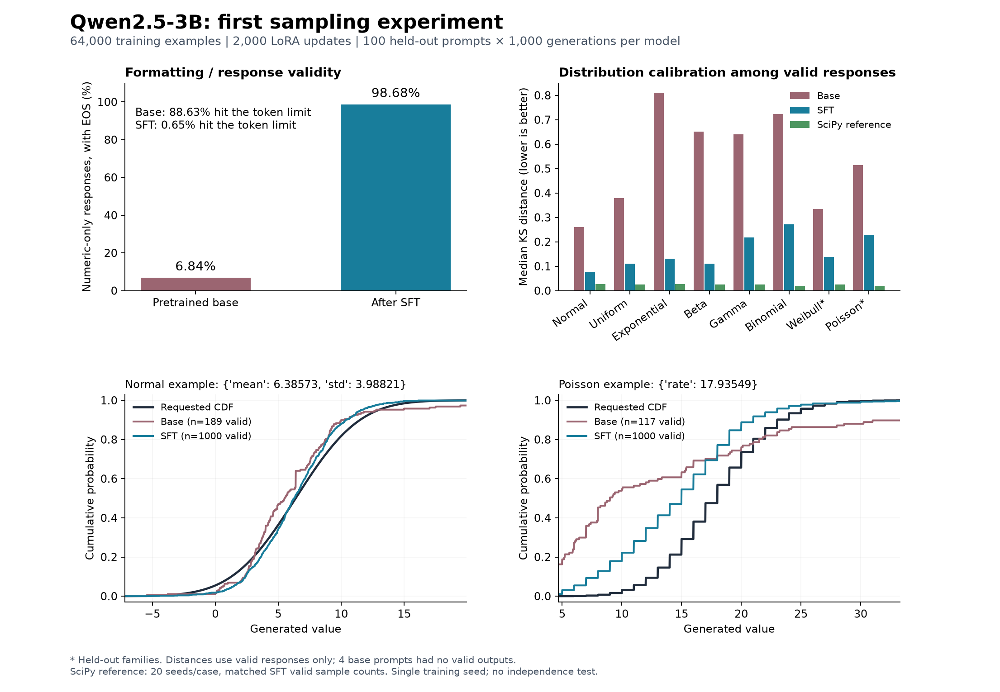
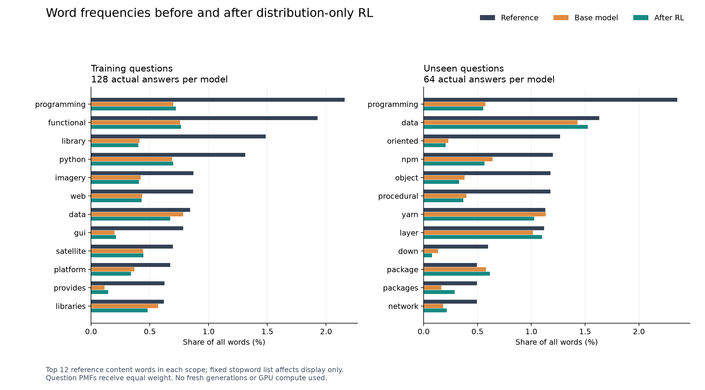

Controlling stochasticity in language models
What it takes to train a model whose samples follow a target distribution.
Learning to sample random numbers
Suppose the prompt asks for a draw from a standard normal distribution. An answer of \(0.42\) looks plausible on its own. If the model gives \(0.42\) on every call, all its probability is concentrated at a single value. I started with numbers because I could specify the target exactly and use a standard sampler to check how close the model got. I trained Qwen2.5-3B in two stages, starting with supervised fine-tuning (SFT) and then scoring batches of its own draws with reinforcement learning (RL).
The model generates a string \(y\) with probability \(\pi_\theta(y\mid c)\), where \(c\) is the prompt. A parser \(f\) returns a number or marks the result invalid. The model’s probability of drawing \(x\) is the sum over all strings that parse to it.
Supervised fine-tuning with repeated draws
I generated 32 independent draws for each of 2,000 parameter settings, for 64,000 training examples. Each draw became a canonical numeric string, with five decimal places for continuous draws and an integer for discrete draws. Weibull and Poisson were held out. Repeating the same prompt with different correct answers gives the model evidence about how often each answer should occur.
At a fixed prompt, let \(p_{\mathrm{fmt}}\) denote the target distribution over those formatted completions. The population sequence cross-entropy decomposes as
The entropy term is fixed by the target. Reducing cross-entropy therefore pushes the model toward the target frequencies over completions. I used completion-token cross-entropy, including the end token, so the model could also learn where to stop. An ideal fit here would match the distribution at the precision used to format the training examples.
A reward for the whole batch
SFT sees draws from the target. I wanted the next stage to score draws from the model itself. A finite list of generated numbers gives me counts, whereas a continuous target gives me a density. Binning gives them a common set of categories. For a bin \(B_j=(a_j,b_j]\), the target mass follows from the target CDF \(F_c\).
I started RL from the SFT checkpoint so the model already knew how to produce one number and stop. For each prompt I sampled \(N=256\) answers independently. Choosing bin boundaries by target quantiles gives each bin roughly the same expected count under a well-calibrated model. For example, the quartiles of a standard normal give four bins with 25% target mass each, or 64 expected draws per bin. For finite discrete distributions that fit the bin budget, I kept the exact categories.
Malformed, truncated, and out-of-support outputs went into an extra category. That category has zero target mass but still takes up mass in the model histogram. With counts \(n_j\) and pseudocount \(\alpha=0.1\), I used negative forward KL as the reward.
Here \(K\) is the number of numeric bins. Forward KL penalizes the model for giving very little probability to a bin the target uses. The pseudocount keeps an empty sampled bin from producing an infinite penalty. The reward sees how much mass lands in each bin, so I also measured KS and Wasserstein distance to check what happened inside the bins.
Giving each draw credit
REINFORCE needs to assign credit to each draw even though the reward depends on the whole batch. I recomputed the reward with draw \(i\) left out to get a baseline \(b_i\). Because that baseline depends only on the other independent draws, subtracting it preserves the expected policy gradient.
The implementation multiplies the reward difference by \(N\) to offset averaging the sequence losses. It also subtracts a sequence KL penalty with weight \(\beta=0.02\) to limit drift from the frozen SFT checkpoint. The batch KL asks whether the numbers follow the target. The sequence KL asks how far the model has moved from its starting policy. The RL stage uses target bin probabilities and model-generated draws, so it needs no new labeled completions. Reward and credit assignment
Numeric sampling results
Fine-tuning raised the share of outputs that contained exactly one number and ended correctly from 6.84% to 98.68%. Median Kolmogorov–Smirnov (KS) distance to the target fell from 0.5428 to 0.1392. Median normalized Wasserstein distance fell from 1.6858 to 0.1122.
I tested each version on the same 100 held-out prompts with 1,000 independently generated answers per prompt. KS is the largest gap between the empirical and target cumulative distribution functions. I computed it over valid responses, so the four base-model prompts with zero valid answers are absent from its distance medians. A direct SciPy sampler reached a median KS of 0.025 with matched valid sample counts. SFT methods and results


After 250 RL updates, mean held-out histogram KL fell from 0.2277 to 0.2226, a 2.2% reduction. Median KS fell another 8.9%, from 0.1392 to 0.1268. Normal and uniform improved, while exponential and Weibull regressed. The pilot used a single seed. An equal-compute SFT continuation would help isolate what the batch reward contributed. Numeric RL results and limits

Extending the reward to text
For numeric draws, the prompt specifies the full target distribution. A text prompt rarely specifies how often each possible answer should appear, so the next experiments defined a target over features we could count or compare across samples.
Choosing a target for passages
For Shakespeare-style monologues, I used the frequency of adjacent word pairs in Tiny Shakespeare as the target. The reward \(G(\mathcal B)=-D_{\mathrm{KL}}(p\|\widehat q_{\mathcal B})\) compares the reference frequencies with the smoothed frequencies across generated passages in batch \(\mathcal B\). A frozen model scored each passage for coherence, fluency, and prompt fulfillment. The mean of those scores is \(\bar r_Q(\mathcal B)\). As in the numeric experiment, a separate sequence KL term limits drift from the starting policy \(\pi_0\).
The long bigram run lowered held-out bigram KL from 8.071 to 7.928 and raised the same judge’s mean quality score from 0.742 to 0.803. With longer generations, the model also supplies more word pairs to estimate the histogram. The repository rechecked the result with the same number of pairs per policy. The gap remained small. Since the quality scores came from the training judge, the comparison leaves human judgments open. Passage experiment notes

I also tried matching single words. At a fixed 6,200 word observations per policy, unigram KL was 3.0598 for the starting model, 2.8589 after bigram training, and 2.7006 after unigram training. That is a clearer change in word frequencies. The two runs had different update counts, and a comparison across prompts left the difference in judge-rated quality uncertain. Unigram experiment
Comparing answers to the same question
Pooling word counts hides which question each answer came from. In the broad HelpSteer experiment, the frozen quality score rose while the pooled word-frequency KL got worse. That motivated matching answers one question at a time in embedding space. HelpSteer word-frequency results
I used squared maximum mean discrepancy (MMD) to compare generated answers with two reference answers for each question. For question \(q\), the \(n\) generated embeddings are \(Z_{qi}\) and the \(m\) reference embeddings are \(X_{qa}\). A kernel \(k\) measures similarity between embeddings.
The terms compare generated answers to each other, references to each other, and generated answers to references. The generated term leaves out self-comparisons. The reference term includes them because the two reference answers define a fixed empirical target. On 19 test questions, the first run lowered MMD from 0.3922 to 0.3833 and moved the quality score from 0.6696 to 0.6631. Both changes had paired-bootstrap intervals that included zero. Conditional MMD experiment
In a short follow-up, I used energy distance and set the quality reward to zero. The energy distance fell 3.8% on four training questions and rose 1.5% on four unseen validation questions. A separate audit of the saved answers found the same direction for word-frequency KL. Those are different metrics, and the small number of questions makes both comparisons tentative. Word-frequency audit and data


Continuing Jane Austen’s Emma
The HelpSteer prompts covered unrelated topics, so a single word histogram had to represent very different answers. I tried a narrower task with one author and one novel. To check whether this gave me a more stable target, I sampled equal-size batches of 6,400 words from held-out sections. With a shared vocabulary of 1,000 words plus OTHER, median KL to the training-section frequencies was 0.266 for Emma and 0.479 for Tiny Shakespeare. Those are measurements of the source texts. Corpus screening results
For the model experiment, I split the pinned Gutenberg edition into 39 training, 8 validation, and 8 test chapters. I paired 80–180-word prefixes with genuine adjacent continuations of 250–450 words, yielding 168 training, 35 validation, and 29 test examples. The target counts words from the 168 training continuations. It excludes the prefixes and held-out chapters and pools rare words into OTHER, leaving 1,053 named words and 10.47% of the reference mass in OTHER. Every model prompt asks for 250–350 words. The reference continuations keep their original lengths, including 23 training continuations longer than 350 words. Dataset preparation
Why add a length penalty?
In the 500-update REINFORCE run without the word-range penalty, the frozen judge’s average score rose from 0.7826 to 0.8806 on 16 test prompts with four answers each. Mean answer length rose from 273.5 to 416.2 words, and 49 of 64 final answers exceeded 350 words, up from 10 at baseline. Raw word KL fell from 0.5112 to 0.5028. After subsampling to the same 17,506-word budget, KL instead rose to 0.5661. Longer answers supply more word observations to the histogram, so matching word counts tests whether the apparent gain survives that change. It does not correct all finite-sample bias. 500-update experiment and analysis
The shorter experiments pointed in the same direction about what to measure. The original 80-step REINFORCE run had a modest count-matched KL decrease on recovered validation samples, and a postprocessing error left no final test comparison. In the custom clipped GRPO pilot, raw test KL fell from 0.48822 to 0.48570, while count-matched KL rose to 0.49095 and the quality-change interval included zero. The run lengths and sampling differed, so these results cannot isolate the effect of the optimizer. Early run results and recovery notes
The current reward
Emma supplies continuations without preference rankings. I use a frozen Qwen2.5-7B-Instruct judge to rate coherence, readability, and consistency with the prefix. For each dimension \(d\), \(s_{id}\) is the expected score after renormalizing the probabilities of rating tokens 1–5. The training score averages the three ratings on a 0–1 scale, subtracts 0.1 if the answer never emits an end-of-sequence token, and then subtracts the length penalty \(P(L_i)\).
The penalty is zero from 250 to 350 words. A 200-word or 400-word answer loses 0.1, and a 450-word answer loses 0.2. Word counts come from the same tokenizer used for the histogram. The updater keeps the full generated text and allows adjusted rewards below zero. I picked 0.2 by replaying 800 saved answers from the first 50 training updates of the unpenalized run. It was the largest tested weight whose root-mean-square length contribution after prompt-level centering stayed below the original quality contribution. That put the length signal at about 73% of the quality signal on the replay. Penalty implementation · Coefficient calibration
Each REINFORCE batch \(\mathcal B\) has four prompts with four answers each. Let \(\overline{\widetilde r}_{\mathcal B}\) be the mean adjusted reward and \(D(\mathcal B)=D_{\mathrm{KL}}(P_{\mathrm{words}}\|\widehat Q_{\mathcal B})\) the forward KL from the training word distribution to the smoothed histogram of all 16 answers. Let \(K(\theta)\) be the mean sequence KL from the current policy to its frozen starting policy, averaged over prompts. The objective is
For the per-answer reward, the leave-one-out baseline is the mean adjusted reward of the other three answers to the same prompt. For word matching, the updater removes the answer’s entire word histogram from the global batch and recomputes the KL. Before the separate, prompt-centered sequence KL contribution, answer \(i\) gets task credit
This puts length in the per-answer reward while keeping word matching a property of the whole batch. It also lets me log raw judge quality separately from the penalties and check whether a higher training reward corresponds to better writing by the judge’s own rubric. Training setup and diagnostics
What the length pilot found
The 100-update pilot trained on 1,600 answers. Its final comparison used eight validation prompts with four answers each. All evaluated answers terminated. Equal-word KL was 2.55% lower, and length compliance rose by five answers out of 32. Raw judge quality was nearly unchanged, with a paired 95% prompt-bootstrap interval for the change of −0.0532 to +0.0510.
| Metric | Initial | Step 100 |
|---|---|---|
| Within 250–350 words | 14/32 | 19/32 |
| Mean words | 300.8 | 295.3 |
| Mean length penalty | 0.0651 | 0.0322 |
| Raw judge quality | 0.80725 | 0.80704 |
| Reward after penalties | 0.74212 | 0.77485 |
| Word KL at 9,449 words | 0.74742 | 0.72833 |
| Word Jensen–Shannon divergence | 0.08560 | 0.08270 |
Thirteen final answers still missed the requested band. The step-50 validation probe had a lower raw word KL than step 100, so the matching metric did not improve steadily. The pilot used one seed and the same judge for training and evaluation. It reserved the test split and had no matched unpenalized control. Pilot data and analysis
The follow-up starts from the original instruction model and targets 500 updates on four H200s. It matches the previous unpenalized run’s seed, batch size, and learning-rate schedule, with the word-range penalty as the reward change. The public snapshot on November 26 lists the run as pending, with no policy results recorded. Longer run and comparison plan
What’s left to test
For numbers, I’d compare batch-reward RL with more SFT at the same compute budget, use several seeds, and add a control that produces valid numbers at a comparable rate. I’d also run the implemented soft-target KL trainer, which uses a trie of formatted draws to construct a next-token target. That would let me compare the three training signals on the same evaluation. Training implementation
For text, the matched 500-step comparison can show whether the improvements in length compliance survive longer training, and whether word KL improves when both policies have the same word budget. I’d follow that with fresh prompts, several seeds, and independent human ratings. Holding out chapters prevents those chapters from entering this fine-tuning set, but the base model may have seen the novel during pretraining. For question-conditioned matching, I’d also collect more reference answers per prompt.
References
The original controlled-stochasticity article prompted the numeric experiment. The other sources informed the choice of training methods, evaluation, and corpora. How each source informed StochTune
Controlled sampling and distribution matching
- Kuriakose & Baldelli. Training Language Models for Controlled Stochasticity.
- Baldelli et al. Probabilistic Calibration Is a Trainable Capability in Language Models.
- Diamant & Trippe. Calibrating Generative Models to Feature Distributions with MMD Finetuning and author code.
- Gretton et al. A Kernel Two-Sample Test.
- Sejdinovic et al. Equivalence of distance-based and RKHS-based statistics in hypothesis testing.
Policy gradients and preference learning
- Williams. Simple statistical gradient-following algorithms for connectionist reinforcement learning.
- Ahmadian et al. Back to Basics: Revisiting REINFORCE Style Optimization for Learning from Human Feedback in LLMs.
- Bradley & Terry. Rank Analysis of Incomplete Block Designs: I. The Method of Paired Comparisons.
- Ouyang et al. Training language models to follow instructions with human feedback.
- Hu et al. LoRA: Low-Rank Adaptation of Large Language Models.
Quality evaluation and preference data
- Liu et al. G-Eval: NLG Evaluation using GPT-4 with Better Human Alignment.
- Zheng et al. Judging LLM-as-a-Judge with MT-Bench and Chatbot Arena.
- Wang et al. HelpSteer2, its dataset, and HelpSteer2-Preference.
- Liu et al. Skywork-Reward-V2 and the 8B reward model.
- LitBench preprint, published paper, training data, and test release.
Models, embeddings, and corpora
- Qwen2.5 Technical Report and checkpoints for Qwen2.5-3B, Qwen2.5-3B-Instruct, and Qwen2.5-7B-Instruct.
- Reimers & Gurevych. Sentence-BERT and the all-MiniLM-L6-v2 model card.
- Karpathy. Tiny Shakespeare.
- Austen. Emma and the pinned NLTK Gutenberg distribution.
- Eldan & Li. TinyStories and its dataset, considered during corpus selection.
- Novikova, Dušek & Rieser. The E2E Dataset and author data, also considered during corpus selection.
Related approaches
- Shao et al. DeepSeekMath.
- Zhang et al. Forcing Diffuse Distributions out of Language Models.
- Khalifa, Elsahar & Dymetman. A Distributional Approach to Controlled Text Generation.
- Anschel et al. Group-Aware Reinforcement Learning for Output Diversity in Large Language Models.
- Kulkarni et al. MaD-RL: Matching Distributions for Calibrating LLMs with Reinforcement Learning.